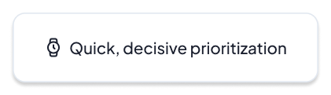

Launched a patient portal from zero to App Store in under 4 months, leading design of the homepage, secure messaging, and medical proxy account framework.
Timeline —
Oct 2025 – Present
4 months to GA
Role —
UX Designer II
Team —
Oracle Health Design
Skills —
Product Strategy
Interaction Design
Systems Thinking
Figma
Codex & VSCode
Check us out in the App Store!
01 Context
Oracle Health was building a brand new patient app — an effort to give patients a much better way to engage with their own healthcare. I got recruited specifically for this project, which was exciting and a new challenge: the deadline was App Store submission in under 4 months, and the product didn't exist yet.
My scope covered four areas: the patient homepage, a suggested care engine, secure messaging with care teams, and the account framework for medical proxies.
02 The Homepage
The homepage is the first thing a patient sees every time they open the app. It needed to show the right information at the right time — upcoming appointments, tasks to complete, care reminders — while fitting the mental model of a patient. Worth remembering: some of our users are anxious, some are sick, and some have never used a health app before. Managing confidentiality and sensitive information was a constant consideration.
So the challenge was: how can we ground the user in an action-oriented, easy to understand synopsis of their health?
I designed it as a priority-ranked feed — the most time-sensitive tasks (an appointment tomorrow, an unread message from your doctor) always float to the top, and the health summary below walks the patient from a high-level snapshot view down to granular datapoints. The goal was to focus the user on actionable information, and tap into patterns patients already know from consumer mobile apps.
03 Suggested Care Engine
One of the more ambitious features was a suggested care engine — the app noticing things like "you haven't had a physical in two years" or "flu shot season is coming" and surfacing them proactively.
The tricky part was trust. Nobody wants to feel like their health app is nagging them. Patients needed to understand how the suggestion is relevant to them personally, and understand the value in the actions they can take.
So I designed each suggestion card to be transparent about its personalized reasoning ("based on your family history") and give patients clear options — schedule it, defer it, or just learn more.
04 Secure Messaging
Secure messaging has a unique mix of patient- and clinician-facing considerations impacting functionality. Patients show up expecting something like texting or email, while care teams have complex routing rules, triage, and compliance requirements shaping how they respond. Here, I connected with our clinical experience partners to understand physician needs, like carefully limiting what messages actually make their way into a doctor's inbox.
The goal was to simplify, on the patient-facing side, the complicated routing path in the background, and set clear expectations of how and when providers would respond.
A few things I focused on: making it clear who you're messaging and what their role is before you even start typing; letting patients flag what kind of message they're sending (clinical question, admin request, prescription refill) so it gets routed correctly; and telling people upfront how long a response might take. We also leveraged conversational AI to route any general and non-critical questions through Ask Oracle, saving clinicians from extra administrative burden.
05 Medical Proxy Account Framework
Medical proxies — a parent managing their kid's care, an adult child helping an aging parent — are one of the messiest problems in patient-facing health software. A proxy isn't a full account holder, but they're not just a guest either. Their level of access can vary by relationship, the patient's age, and whatever the health system has decided to allow. Ensuring only the right information is shown to the right people is critical for patient safety.
This was the most systems-thinking-heavy part of the project. I needed a permission model flexible enough to handle a ton of real-world configurations, but simple enough that any patient could actually understand and manage it on their own.
I worked closely with product and engineering to map out every state a proxy relationship could be in — inviting someone, accepting, adjusting access, revoking it — and designed each step so that the consequences of a choice were always spelled out in plain language before you confirmed anything.
06 Shipping
Four months is not a lot of time. Once the designs were in engineering's hands, a big part of my job became making sure what shipped actually matched what we designed.
I logged and tracked visual and functional bugs across the whole product, working directly with engineers to get them resolved before launch. We hit 100% design parity at GA.
A lot of that meant triaging in real time — figuring out what was a true bug, what was a technical constraint, and when there was a creative design solution that could meet both needs. In a healthcare app, small visual inconsistencies are foundational issues; they erode the sense of trust that patients need to feel safe using the product at all.
07 Learnings & Impact ✨

The app shipped to the App Store on schedule — zero to launch in under 4 months, a timeline that required close partnership with engineering and a willingness to make fast, well-reasoned design decisions without over-deliberating.
While this was a new skill for me to learn, I'm so glad to have it in my toolbox now. Patients using this app for the first time deserved an experience that looked and felt exactly as designed.
Up next: Oracle Patient Portal / Oracle Clinical / Oracle Procurement / Norfolk Southern / Bits of Good / Keeb / Spence